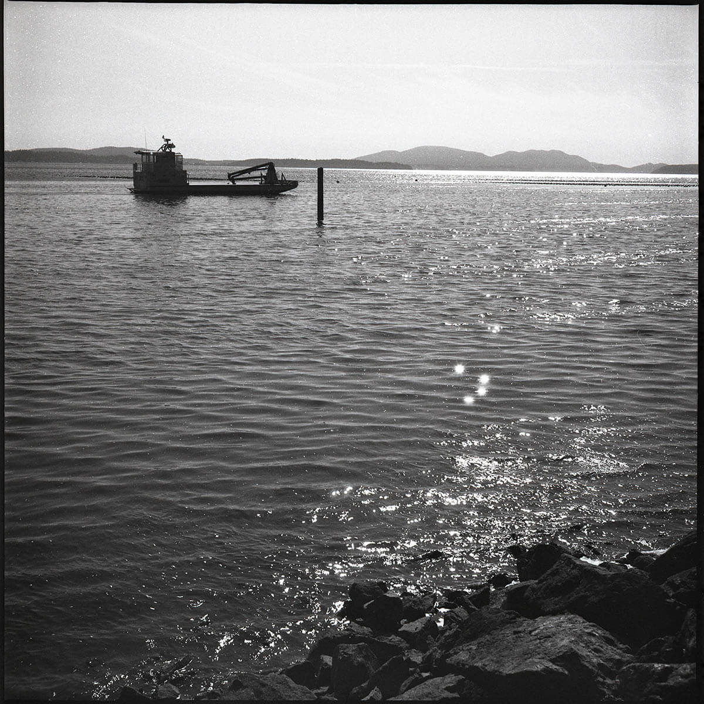
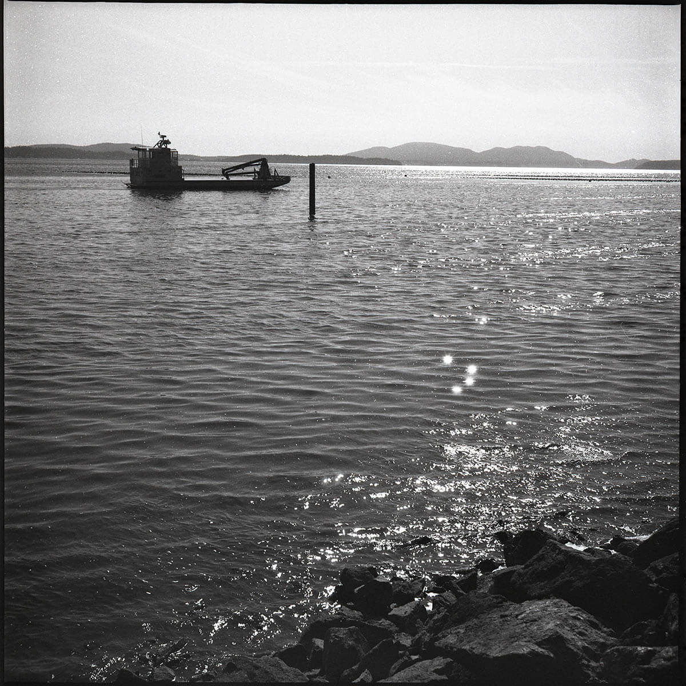
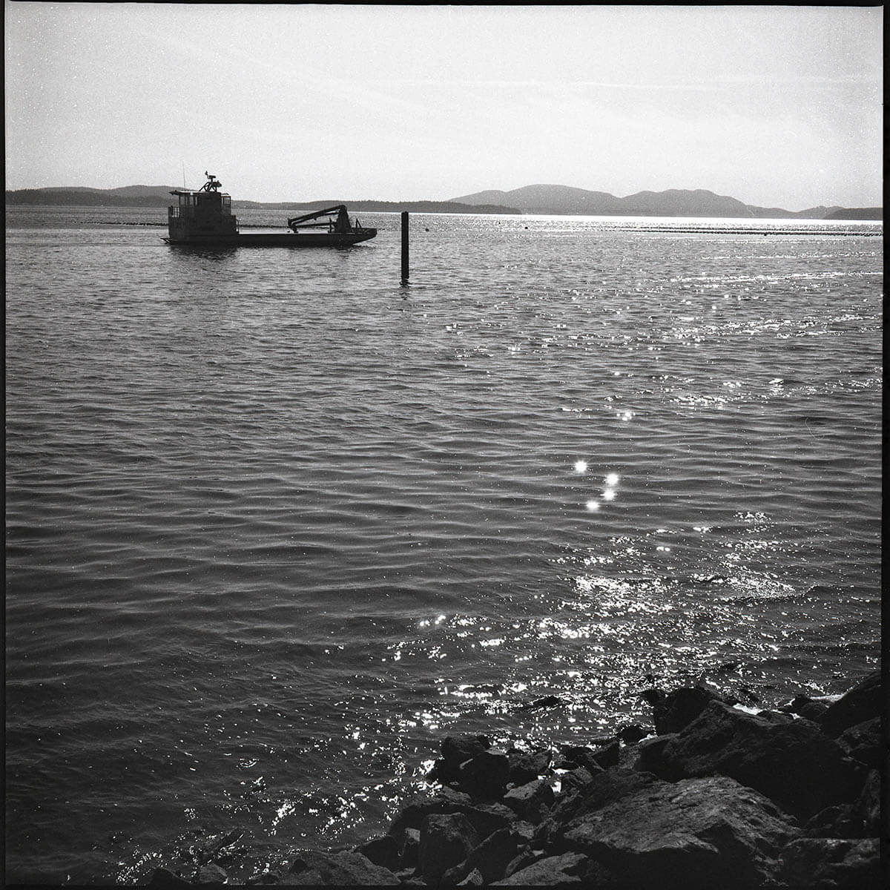

SAMPLE PHOTOS
These images were shot on a Yashica-D medium format camera and developed with the caffenol recipe described below.
 

While I love having a high-quality camera in my pocket at all times, and never have to worry about running out of film right before a perfect photo op, I'm nostalgic for the days of film photography, and have been shooting 35mm and 120 film for a few years now. But one-hour photo developers are basically extinct, and if you can find a lab locally, it's probably slow and expensive. But it turns out there's a cheap and easy way to develop photos on your own, with mostly household chemicals. I've been using this process successfully for a while now, and enjoying the results. Caffenol is a film developer made with instant coffee powder, vitamin C powder, sodium carbonate (commonly called washing soda), and water. With a few pieces of inexpensive equipment and a photo fixer solution, you can process film in your kitchen sink in about 45 minutes.
These images were shot on a Yashica-D medium format camera and developed with the caffenol recipe described below.

The simple version from this non-chemist - caffeic acid which is present in coffee (but unrelated to caffeine itself), is chemically similar to catechol, the developing agent present in many commercial film developers. Vitamin C (ascorbic acid) is also similar, and the two work together to speed up the development. However, this mixture on its own is too acidic to develop film. Adding sodium carbonate, in the form of washing soda, reduces the acidity to create an alkaline developing solution. If you're curious about the details of the chemistry, you can read about the development (pun intended) of this process in this paper from the Rochester Institute of Technology, where the process was invented in 1995. Caffenol only handles development though. You'll still need a commercial photo fixer solution to stop the process and stabilize the image once the development has been completed.
You won't need a darkroom for this process, but you will need a way to get the film unloaded and into a lightproof development tank. If you haven't done this before, here is a quick video tutorial. Practice if you can! It's hard to do this by feel alone! Here's everything you'll need when you're ready to get started:
Exposed Film: Any B&W film will work. This process can be used on color film, but the result will not be in color!
Lightproof Bag: Basically a portable fabric darkroom with armholes.
Daylight Developing Tank: A lightproof tank with a removable lid - this is where your homebrew chemicals and film combine to make magic happen.
Can Opener: Use this to open the film canister and get your film out. You do this inside the lightproof bag, which takes a lot of practice!
Film Reel: This usually comes with the developing tank. You load the film onto this inside the lightproof bag.
Scissors: For trimming the film away from the reel, and trimming any leftover tape or tabs off the end.
Instant Coffee Powder: Any brand should work - you can even use decaf if you reallllly want to.
Vitamin C Powder: Available at most drug stores, grocery stores, and supplement stores.
Washing Soda: Sometimes called laundry booster, also available at some grocery stores, and easy to order online. Make sure it's made of Sodium carbonate!
Fixer: The only traditional chemical needed for this process
A Sink: You'll be doing lots of pouring and rinsing.
Once your film is in the tank, you can follow these directions to develop your film. You can also scroll down to the recipe app below for guided instructions.
1. Mix the Chemicals. For one roll of 35mm film use the following amounts, or double this to develop two rolls at once.
For one roll of 120 film, use the following amounts:
2. Develop - 14:00 minutes, agitate the tank, turning it upside down, then back upright, continuously for first minute, and 3 times each minute after.
3. Rinse - Fill with water, agitate 6 times. Do this 3 times.
4. Fix - 5:00 minutes, agitate 3 times a minute
5. Rinse - Fill with water, agitate 3 times, refill, agitate 6 times, refill, agitate 12 times
6. Soapy rinse - Fill with dish soap water - agitate 24 times and empty. Squeegee the film and hang to dry.
Developer: Combine half of the water with instant coffee and Vitamin C powder, and stir until fully dissolved. In a separate container, combine the remaining water the washing soda and stir until fully dissolved. Combine them into a single vessel and stir.
Fixer: Dilute the fixer with water, per instructions on the package. This can be saved and reused for multiple rolls.
Set a timer for 14 minutes. Pour the developer in to the tank. Agitate slowly, turning the tank upside down, then back upright, for the first minute. Agitate three times a minute once every minute after that, until the timer expires, then pour out the developer.
Fill the tank with water. Agitate 6 times, then pour out the water. Repeat this process 2 more times.
Fill the tank with fixer. Set the timer for 5 minutes, and agitate 3 times each minute. Pour the fixer back into its container when the timer finishes. Save the fixer for re-use later.
Fill the tank with fresh water, agitate 6 times, and pour out. Refill, agitate 12 times, and pour out. Refill, agitate 24 times, and pour out.
Refill the tank with soapy water, agitate slowly 24 times, then pour out. Open the tank, remove the reel, and open it to release the film. Hang the film with a coathanger and clothespin, and use wipe the film dry using your fingers or a squeegee.
Agitate the Tank